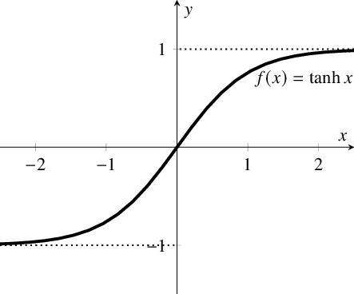

激活函数
激活函数为神经网络引入了非线性，增强了神经网络的表达能力。
sigmoid
函数表达式:
$$
f(z) = \frac{1}{1+e^{-z}}
$$
函数曲线:

优点:
- 输出范围是0到1，因此，对每个神经元的输出进行了归一化。
- 用于预测概率作为输出的模型
- 梯度平滑，不会出现【跳跃】的输出值。
缺点:
- 梯度消失:当函数的输出不是0附近时，会降低权重更新效率。
- 输出总是为正，随着层数的增加，样本的分布会从0-1高斯分布偏移至sigmoid的饱和区域，导致反向传播很难进行，收敛速度较慢。而batch-normalization会把样本强行拉回0-1高斯分布
tanh
函数表达式:
$$
f(x) = tanh(x) = \frac{2}{1+e^{-2x}}-1
$$
函数曲线:

与sigmoid函数的对比:

优点:
- tanh相较于sigmoid函数的优点在于:中心对称，均值为0，能将0-1高斯分布依然映射到0附近的分布，保持零均值特性，所以，收敛速度较sigmoid快一些。
缺点:
- 梯度消失:当输入较大或较小时，梯度较小，不利于权重更新
在一般的二元分类问题中，tanh 函数用于隐藏层，而 sigmoid 函数用于输出层，但这并不是固定的，需要根据特定问题进行调整。
relu
函数表达式:
$$
\sigma(x) =
\begin{cases}
max(0,x)&, x>=0
\
0 &, x<0
\end{cases}
$$
函数曲线:

优点:
- 当输入为正时，不存在梯度饱和问题；
- 计算速度快，relu函数中只存在线性关系，因此计算速度比sigmoid和tanh快。
缺点:
- 当输入为负时，relu完全失效，在反向传播过程中，如果输入是负数，则梯度完全为0。
softmax
函数是用于多分类问题的激活函数，对于长度为 K 的任意实向量，Softmax 可以将其压缩为长度为 K，值在（0，1）范围内，并且向量中元素的总和为 1 的实向量。
函数表达式：
$$
f(x_i)=\frac{e^{x_i}}{\sum_{j=1}^{K}{e^{x_j}}}
$$
函数曲线:

优点:
- 引入指数形式:能够将差距大的数值距离拉的更大
缺点:
- 指数函数的曲线斜率逐渐增大虽然能够将输出值拉开距离，但是也带来了缺点，当 $x_i$值非常大的话，计算得到的数值也会变的非常大，数值可能会溢出。
gelu
对于每一个输入 $x$，其服从于标准正态分布 $N(0, 1)$，它会乘上一个伯努利分布 $Bernoulli(Φ(x))$，其中$Φ(x) = P(X ≤ x)$。随着 x 的降低，它被归零的概率会升高。
函数表达式:
$$
GELU(x) = xP(X \le x) = xΦ(x)
$$
函数曲线: